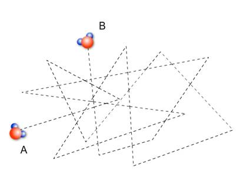

|
Вы смотрите телевизор.
Из кухни донесся запах жареной картошки. Это значит, что в ваш нос попали
молекулы картошки. Распространение запахов происходит из-за того, что молекулы
непрерывно движутся. В нашем случае молекулы картошки движутся
между молекулами воздуха. Из-за постоянных столкновений молекул друг с другом
это движение беспорядочное (или, как говорят, хаотическое). Чтобы
убедиться в том, что молекулы движутся, возьмите микроскоп с 600-кратным
увеличением, на предметное стекло поместите маленькую каплю молока, сверху
положите покровное стеклышко. Поместите препарат на столик микроскопа, и вы
сможете лично наблюдать, как молекулы «колотят» частички жира в капле молока.

Впервые такое
хаотическое движение наблюдал английский ботаник Роберт Броун, и в честь него
это движение называется броуновским. Скорость этого хаотического движения
тем больше, чем больше температура тела, состоящего из этих молекул.
Явление, при котором
происходит взаимное проникновение молекул одного вещества между молекулами
другого, называют диффузией.
Вы положили
сахар в чай и размешали ложкой. Почти сразу же вода стала сладкой. Неужели
диффузия произошла так быстро? Попробуйте не размешивать сахар и ждите, когда
вода станет сладкой по всему объему. Вам придется ждать несколько дней!

 Средняя скорость движения молекул приблизительно равна 400 м/с. Определим
скорость диффузии в газах. Для этого в одном конце комнаты прольем две-три капли
духов. Быстро бежим в другой конец комнаты и засекаем время от начала опыта до
момента, когда почувствуем запах. Скорость диффузии получим, разделив длину
комнаты на время, через которое мы почувствовали запах духов. Скорость диффузии
в газах получится около 1 см/с. Почему у нас получился такой результат? Дело в
том, что из-за постоянных столкновений с другими молекулами движение молекул
происходит не по прямой, а сложной ломаной линии. На рисунке показано, как
молекула может попасть из точки А в точку В.
Средняя скорость движения молекул приблизительно равна 400 м/с. Определим
скорость диффузии в газах. Для этого в одном конце комнаты прольем две-три капли
духов. Быстро бежим в другой конец комнаты и засекаем время от начала опыта до
момента, когда почувствуем запах. Скорость диффузии получим, разделив длину
комнаты на время, через которое мы почувствовали запах духов. Скорость диффузии
в газах получится около 1 см/с. Почему у нас получился такой результат? Дело в
том, что из-за постоянных столкновений с другими молекулами движение молекул
происходит не по прямой, а сложной ломаной линии. На рисунке показано, как
молекула может попасть из точки А в точку В.
В твердых телах
также происходит диффузия, но только очень медленно. При разборке старых зданий,
части которых были скреплены болтами, обнаружилось, что гайки невозможно
открутить. За десятки лет гайки и болты срослись, стали единым целым! Произошло
это благодаря диффузии.
Процесс диффузии
ускоряется с повышением температуры. Это происходит потому, что с повышением
температуры увеличивается скорость движения молекул.


Метки: диффузия, Роберт Броун, броуновское движение |